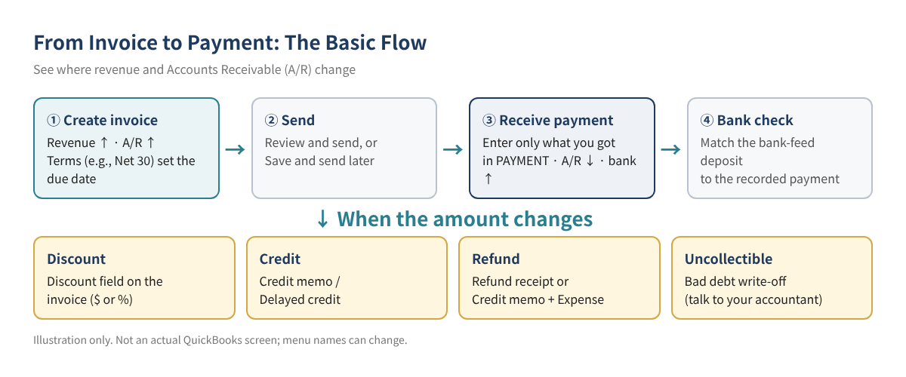
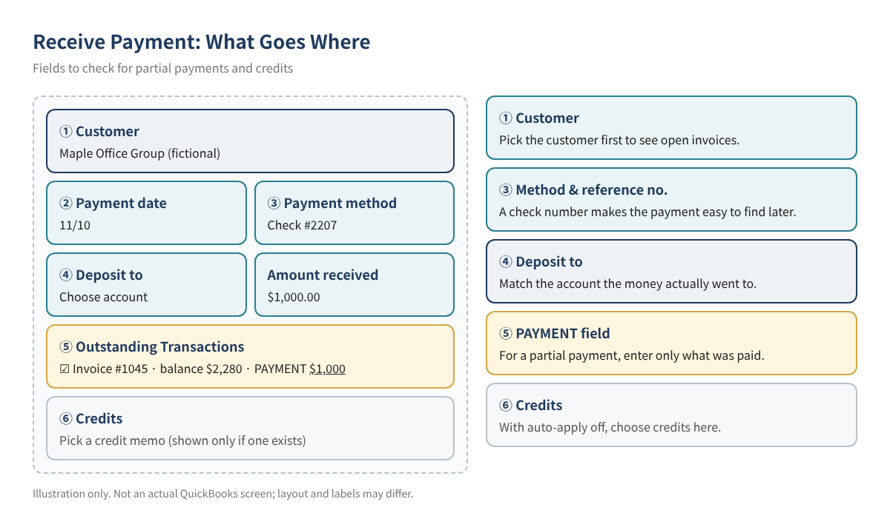
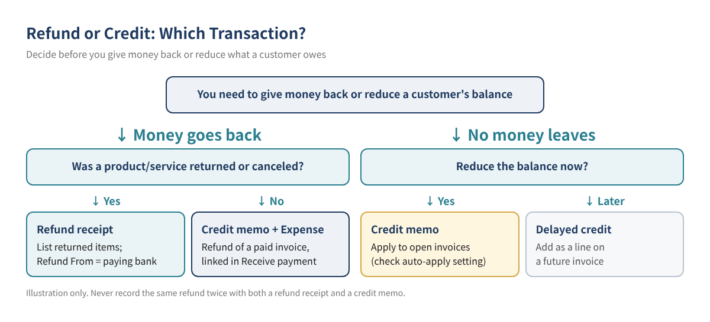
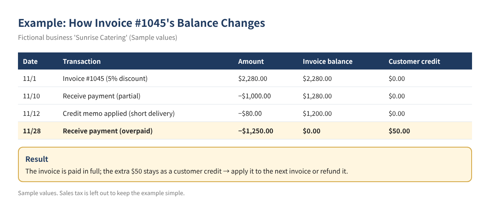

Sending an invoice is the easy part. The trouble starts afterward: a customer pays half, asks for a price break, needs part of the money back, or sends more than the invoice total. If each of those gets entered as a plain "deposit," or the invoice amount gets edited by hand, your Accounts Receivable (A/R) and bank balances stop agreeing, and month-end reconciliation turns into a hunt.
This guide walks through the core Invoice → Receive payment flow in QuickBooks Online (QBO), then shows which transaction to use for partial payments, discounts, credits (credit memos and delayed credits), refunds, overpayments and uncollectible invoices. It builds on the series starter, QuickBooks Online Basics for Beginners, and picks up where From Estimate to Invoice left off.
Who this is for ☐ Customers often pay invoices in installments ☐ You give discounts by typing over the price ☐ You record refunds as ordinary expenses and suspect sales look inflated ☐ A customer shows a negative balance and you are not sure why ☐ You have invoices that are months past due
According to Intuit's help content, recording an invoice records what the customer owes, and unpaid invoices sit in Accounts Receivable on the balance sheet. When the money arrives, you record Receive payment against that invoice so A/R goes down. If you create the invoice and then also add the bank deposit as new income from the bank feed, revenue is counted twice and the invoice stays open.

Each change in amount calls for a different transaction. Use this table as a map for the rest of the guide.
| Situation | Transaction to use | Effect on the books (summary) |
|---|---|---|
| Bill a customer | Invoice | Revenue ↑, A/R ↑ |
| Customer pays in full or in part | Receive payment | A/R ↓, deposit account ↑ |
| Price reduced on the invoice itself | Discount field on the invoice | Lower amount billed from the start |
| Reduce the balance of an invoice already sent | Credit memo | A/R ↓; original invoice unchanged |
| Promise to take it off the next bill | Delayed credit | No sales impact until applied to an invoice |
| Give money back for returned/canceled items | Refund receipt | Refund recorded from the chosen bank account |
| Refund a paid invoice (no return) | Credit memo + Expense, linked in Receive payment | A/R and bank both stay correct |
| Money you will never collect | Bad debt write-off (credit memo method) | Bad debts expense on the P&L |
Tip The "effect" column summarizes Intuit's help descriptions. How these items are treated on a tax return depends on your accounting method (cash or accrual) and the facts, so confirm with your tax professional.
A clean invoice makes every later step simpler. It helps to have customers and products already set up (see Import Customers, Vendors and Products from Excel).
Note Intuit says invoicing is limited on QuickBooks Online Free and Lite. Features and prices by plan change often, so check your current subscription screen.
If you lower the unit price to give a discount, nobody can tell later what the regular price was or how much you gave away. QBO has a separate discount field; turn it on first.
Intuit notes that turning the discount field off while creating an invoice also turns it off in your account settings.
| Method | How to enter it | Best for | Watch out for |
|---|---|---|---|
| Percentage (%) | Choose % in the Discount field and enter the rate | Across-the-board offers like "5% off" | Check the sales tax order |
| Flat amount ($) | Choose $ in the Discount field and enter the amount | "$100 off this job" | — |
| Discount item (negative line) | Create a discount product/service and enter a negative rate | Keeping a named promotion on the invoice | Per Intuit, this method takes whole amounts only, not percentages |
If you collect sales tax, decide whether the discount applies before tax. Intuit explains that the double-arrow icon next to the discount field swaps the order of the tax and discount fields so the discount is applied before sales tax is calculated. The correct order can depend on the state and the type of discount, so check your state's sales tax guidance (sales tax gets its own post, #13 in this series).

After a partial payment, the invoice stays open for the remaining balance. When the rest comes in, record another Receive payment the same way. Avoid editing the invoice down to the amount received to make it look paid: that understates revenue and erases the record that the customer still owes you.
Tip Your Deposit to choice should match how the money actually reached the bank. If you deposit several customers' checks together, see Clean Up Undeposited Funds for how grouped deposits work and how to fix a messy balance. When the deposit shows up in the bank feed, match it to the existing record rather than adding it again (see QBO Bank Feeds: Match, Add and Rules).
Use a credit when you are not handing money back but need to reduce what the customer owes. Intuit's help separates the two like this.
| Credit memo | Delayed credit | |
|---|---|---|
| When to use | Reduce the customer's open balance now | Take it off a future bill |
| Current balance | Reduced immediately | Unchanged |
| How it is applied | Fully or partly to an invoice; can be applied in Receive payment | Added as a line item on a future invoice |
| Sales reports | Affects sales reports even if not applied | No effect until applied to an invoice |
Where a credit memo lands depends on Automatically apply credits, found under Settings ⚙ → Account and settings → Advanced tab, in the Automation section.
To apply a credit manually with auto-apply off, open Receive payment, choose the customer, check both the invoice and the credit memo, and enter the credit amount in the invoice's PAYMENT field. No money changed hands, so Intuit says to leave fields such as Amount received blank.
Caution Intuit warns that adding a delayed credit to an invoice from a prior period changes that period's balances. Check dates carefully if the period is closed or already handed to your accountant.

Intuit stresses that you should not also create a credit memo for an item refund, because the refund would be recorded twice. A refund receipt only records the refund; you still need to write the check or process the refund through your card terminal or payment processor separately.
This keeps A/R and the bank balance in agreement. When the refund appears in the bank feed, match it to the expense instead of adding a new one.
When a customer sends more than the invoice total, enter the full amount received in Receive payment and apply only the balance due to the invoice; the rest stays on the customer's account as a credit. Intuit lists three options for that extra money: apply it to another open invoice, refund the customer, or record it as a tip. If another invoice is open, you can select it in Receive payment to use up the remaining amount.
Deleting an invoice that will never be paid also deletes the original sale. Intuit's help describes this approach instead:
Caution Intuit notes that for accrual-basis books a write-off can sometimes be deductible, and it recommends consulting your accountant before writing off any debt. On cash-basis books the amount may never have been reported as income, so the treatment can differ. Talk to your accountant first.
Fictional "Sunrise Catering" billed its customer "Maple Office Group" for an event on November 1. Sales tax is left out to keep the example simple.
| Item | Qty | Rate | Amount (Sample values) |
|---|---|---|---|
| Lunch catering (per person) | 40 | $55.00 | $2,200.00 |
| Delivery and setup | 1 | $200.00 | $200.00 |
| Subtotal | $2,400.00 | ||
| 5% discount (Discount field) | −$120.00 | ||
| Invoice #1045 total (Terms: Net 30) | $2,280.00 |

Check the math: $2,280 − $1,000 − $80 − $1,200 = $0, and $1,250 − $1,200 = $50 of credit. A −$50 customer balance on the customer balance report means that credit is still waiting to be used.
In Receive payment, choose the customer to see all open invoices, check the ones being paid, and make sure the PAYMENT amounts add up to the amount received. One payment record also makes it easy to match the single bank deposit.
Usually it means an unapplied credit or overpayment. Find the credit memo or unapplied payment on the customer record and apply it to the next invoice or refund it.
Generally the invoice stays at its full amount and the difference is recorded as a fee expense. Per Intuit, payments received through QuickBooks Payments are recorded to the accounts for you, while payments through an outside processor are recorded manually. The exact steps depend on your processor and any integration, so settle on a method with your bookkeeper.
If money goes back to the customer for returned or canceled items, use a refund receipt. If no money goes back and you are only reducing what they owe, use a credit memo. For a paid invoice refunded without a return, use a credit memo plus an expense (Figure 3).
Yes, but depending on the date it can change numbers in a period you already reviewed. If that period is closed or was used for a tax filing, talk to your accountant first.
This article is general educational information, not tax, legal or financial advice. Consult a qualified professional about your own situation. QuickBooks Online screens, menu names, plan features and prices change frequently, so check the current screens and Intuit's official guidance before you act. All businesses and customers in the examples are fictional.
QuickBooks is a registered trademark of Intuit Inc.; not affiliated with or endorsed by Intuit.